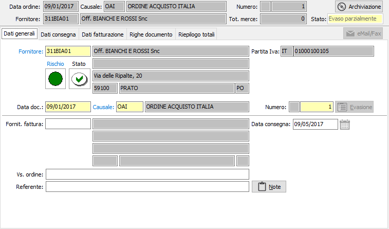
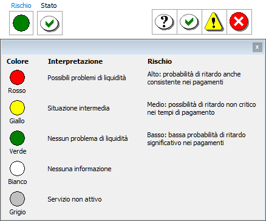
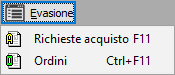

,
questo indica che l'ordine risulta sospeso; gli ordini sospesi non possono
essere evasi o dar luogo alla generazione di altri documenti, non potranno
essere saldati e non potranno essere oggetto di documento di annullamento.
,
questo indica che l'ordine risulta sospeso; gli ordini sospesi non possono
essere evasi o dar luogo alla generazione di altri documenti, non potranno
essere saldati e non potranno essere oggetto di documento di annullamento.Dati generali
All’inizio di un nuovo ordine il cursore è posizionato sul campo fornitore della linguetta dati generali, da cui inizia l’inserimento.
E' possibile che in alto a destra compaia la seguente indicazione ,
questo indica che l'ordine risulta sospeso; gli ordini sospesi non possono
essere evasi o dar luogo alla generazione di altri documenti, non potranno
essere saldati e non potranno essere oggetto di documento di annullamento.
Se l'utente è opportunamente configurato con il doppio clic del mouse sull'indicazione e previa richiesta di conferma è possibile approvare l'ordine; altrimenti è possibile utilizzare l'apposita procedura.

FORNITORE: codice alfanumerico di 8 caratteri, presente in anagrafica fornitori, che individua il fornitore da trattare. Sul campo, la cui compilazione è obbligatoria, sono attive le funzioni di ricerca (F9) ed accesso rapido alla tabella (CTRL+W) per eventuali nuovi inserimenti o variazioni. Il codice inserito in questo campo è quello del fornitore a cui viene effettuato l’ordine. Dopo aver selezionato il codice del fornitore vengono visualizzati, senza possibilità di modifica, i dati anagrafici. Se presente nella linguetta preferenze dell’anagrafica fornitore, viene anche compilato automaticamente il successivo campo causale ordine con la causale esistente in anagrafica. La procedura non consente l’inserimento dell’ordine nel caso in cui il campo Codice stato dell’anagrafica fornitore contenga i valori Bloccato o ordini sotto controllo. Nel caso il fornitore abbia associato delle lettere di intento, dopo l'inserimento della data del documento, sarà richiesto quale lettera utilizzare sul documento.
Vengono visualizzati, tramite appositi indicatori visivi, lo stato di rischio, derivante dal Company Shield e lo stato di affidabilità derivante dalla situazione amministrativa; cliccando sull'etichetta Rischio viene mostrata la legenda che spiega i significati dei colori mostrati, cliccando invece sull'indicatore colorato, se il servizio Credit Shield è attivo e ci sono informazioni, si accede direttamente all'analisi della partita Iva con quella riportata sul documento, posizionati sulle informazioni semaforiche. Se lo stato di rischio non viene visualizzato significa che il servizio è attivo, ma l'utente con cui si è collegati non è configurato come utente Company Shield oppure non ha l'abilitazione alla visualizzazione dei semafori.
Sia l'indicatore di rischio che l'indicatore di stato non causano alcun blocco all’inserimento del documento, ma si limitano a mettere sull’avviso l’utente.
Gli indicatori di stato possono essere così riassunti:
punto interrogativo: indica che non è presente nessun valore da controllare;
segno di spunta verde: indica che è presente un fido sufficiente a coprire gli eventuali scoperti;
punto esclamativo su fondo giallo: indica di fare attenzione perchè non è presente nessun fido ed è presente uno scoperto;
X su sfondo rosso: indica che è presente un fido che non è sufficiente a coprire lo scoperto.
Cliccando sull'immagine, se gestiti i saldi clienti/fornitori in configurazione, si attiva la finestra video di Situazione amministrativa che consente di visualizzare il fido concesso e la situazione amministrativa dettagliata; nel caso esista uno scoperto di fido il totale viene evidenziato in rosso. L’eventuale saldo negativo fra i vari valori non comporta tuttavia alcun blocco, ma consente all’utente di decidere in merito all’opportunità di inserire il documento.


DATA DOCUMENTO: campo data in cui viene visualizzata la data di sistema, modificabile dall’utente.
CAUSALE: codice alfanumerico di 3 caratteri presente nella tabella Causali Ordini che definisce la tipologia dell’ordine in esame. Se, presente, viene visualizzata la causale esistente nelle preferenze dell’anagrafica del fornitore in esame, modificabile dall’utente. Sul campo sono attive le funzioni di ricerca (F9) ed accesso rapido (CTRL+W) sulla tabella stessa.
NUMERO: campo numerico
che contiene il numero progressivo dell’ordine. Viene completato automaticamente
dal programma in base alla serie contenuta dalla causale. E’ modificabile
dall’utente. 
FORNITORE FATTURA: codice alfanumerico di 8 caratteri, presente in anagrafica fornitori, che individua l’eventuale fornitore, diverso da quello a cui è intestato l’ordine, a cui deve essere intestata la fattura. Sul campo sono attive le funzioni di ricerca (F9) ed accesso rapido (CTRL+W) sulla tabella stessa. Confermando il codice del fornitore vengono visualizzati, senza possibilità di modifica, la ragione sociale e l’indirizzo dello stesso.
FORNITORE FATTURA: codice alfanumerico di 8 caratteri, presente in anagrafica fornitori, che individua l’eventuale fornitore, diverso da quello a cui è intestato l'ordine, a cui deve essere intestata la fattura. Sul campo sono attive le funzioni di ricerca (F9) ed accesso rapido (CTRL+W) sulla tabella stessa. Confermando il codice del fornitore vengono visualizzati, senza possibilità di modifica, la ragione sociale e l’indirizzo dello stesso.
VOSTRO ORDINE: campo alfanumerico per l’eventuale descrizione degli estremi dell’ordine del fornitore.
REFERENTE: campo alfanumerico per l’eventuale descrizione del referente del fornitore. Se presente, viene proposto automaticamente il referente presente nell’anagrafica del fornitore intestatario dell’ordine, modificabile. Sul campo sono disponibili le funzioni di ricerca (F9) sui contatti eventualmente presenti sull'anagrafica.
NOTE GENERALI: campo note per eventuali note di testa ordine, stampabili sul modulo dell'ordine se la personalizzazione di stampa lo prevede.
DATA CONSEGNA: campo data non obbligatorio, presente solo se previsto in configurazione ordini fornitori, per l’eventuale inserimento della data effettiva di consegna, nel caso in cui la stessa sia unica per tutte le righe di ordine inserite. Il pulsante presente accanto al campo consente l'assegnazione, previa conferma, della data su tutte le righe esistenti.
CODICE PROGETTO: Codice alfanumerico di 15 caratteri che definisce il progetto di riferimento. Sul campo sono attive le funzioni di ricerca (F9) ed accesso diretto alla tabella (CTRL+W). Il campo è presente solo se attiva la gestione progetti.
COMMESSA PUBBLICA: Codice della commessa pubblica, sul campo sono attive le funzioni di ricerca (F9) ed accesso diretto alla tabella (CTRL+W). Il campo è presente solo se attiva la gestione della normativa antimafia e se gestita per il tipo documento.